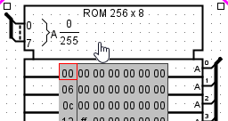
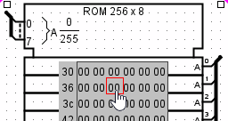

Poking memory
You can manipulate the contents of memory using the Poke Tool ( ), but the interface for this is severely limited by space constraints: For more than the simplest editing, you will probably find the integrated hex editor far more convenient.
), but the interface for this is severely limited by space constraints: For more than the simplest editing, you will probably find the integrated hex editor far more convenient.
Nonetheless, to view and edit values within the circuit, the Poke Tool has two modes of operation: You can edit the address displayed, and you can edit an individual value.
Address selection
To edit the address displayed, click outside the display rectangle. Logisim will draw a red rectangle around the top address.

-
Typing hexadecimal digits will change the top address accordingly.
-
Typing the Enter key will scroll down one line.
-
Typing the Backspace key will scroll up one line.
-
Typing the space bar will scroll down one page (four lines).
Modification of data
To edit a particular value, click the value within the display rectangle. Logisim will draw a red rectangle around that address.

-
Typing hexadecimal digits will change the value at the address currently being edited.
-
The Enter key or Ctrl+Down arrow ill scroll the cursor down one line.
-
The Backspace key or Ctrl+Left Arrow will scroll the cursor one cell backwards.
-
The Space key or Ctrl+right Arrow will scroll the cursor one cell forward.
-
The mouse wheel or Ctrl+up arrow, Ctrl+Down arrow moves the cursor up/down a line.
-
Next: Pop-up menus and files.